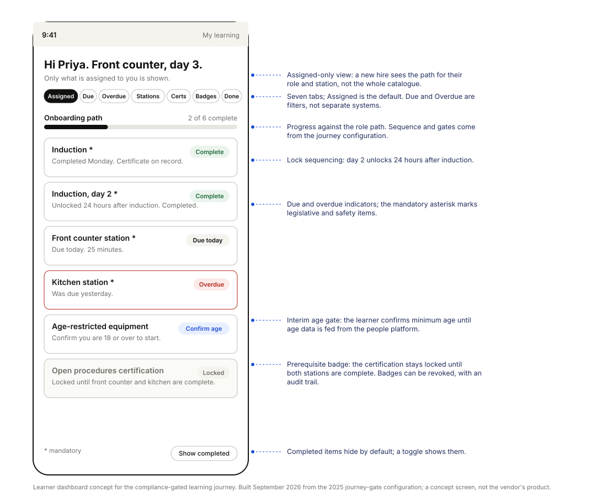

Experience Designer · KFC South Pacific · Sydney
I design how operational services work for the people who run them, across a network of several hundred restaurants.
I run the interviews and the user testing, map services as multi-lane blueprints, facilitate the workshops where priorities get decided, and build the internal tools that keep the evidence within reach. I use AI in that work every day, behind a human review gate.
Lead case · Safety and compliance reporting · 2025
Transforming safety and compliance reporting across a restaurant network
The business assumed location explained why some restaurants reported more incidents than others. I chose the sample to test that. Location did not predict it. The manager did, and the recommendations changed to match.
- Research
- In-depth interviews, a team survey, restaurant visits and two form walkthroughs with the safety team, across eight restaurants
- Output
- A five-stage service blueprint, 232 linked insight records, a findings report, three proposals with prototypes, and the tool that holds it all
- Delivered
- December 2025: findings report, blueprint, roadmap and form prototypes, into the platform, safety and training teams

Ten modules on one design system, each screen annotated with the research finding that drove the decision. Open the product, module by module.
Selected work
All eight projects Workforce platform
Workforce platform
Turning a stalled workforce platform backlog into a ranked plan
A vendor-owned time and attendance platform, a backlog nobody could rank, and managers working around it on paper. Interviews, a survey and site visits mapped into a four-lane blueprint and a scored top ten for the vendor conversation.
Co-led the design work Hiring and onboarding
Hiring and onboarding
Redesigning hiring and onboarding for a restaurant network
Nine stages from application to first shift, mapped from interviews with managers and candidates, with the failing moments named and an automated screening-to-interview path designed around them.
Led the design work
Learning platformReplacing a network-wide learning platform and proving who was compliant
A support-cost case for retiring a legacy platform, a scoping workshop that put every connected system in its own lane, and a compliance-gated learning journey piloted before wider rollout.
Led the design work Self-service channel
Self-service channel
Designing the human half of self-service ordering
A floor role, a placement standard and the training that came with them, for a channel that had reached about half the network while its operating model stood still.
Led the design work Drive-thru
Drive-thru
Keeping the human moment in an AI-run drive-thru
A voice-AI order taker removed the one human moment the channel always guaranteed. Four touchpoints named and trained, a hospitality ritual written for each, and two sequenced pilots designed to test them.
Led the design work Employee experience
Employee experience
Designing the first twelve weeks of a restaurant career, network-wide
Three separate asks synthesised into one attrition chain, two blueprint options held in deliberate tension, and a decision brief a franchise governance forum could settle in one meeting.
Led the design workWhat I do
Four role families, one practice
Research that reaches a decision
Interviews, user testing, surveys and site visits, designed so the sample can answer the question. In the safety work I chose restaurants to test whether location explained reporting differences. The manager explained them, and that changed what we recommended.
Service blueprints and the workshops around them
Multi-lane blueprints that show what the worker, the manager, the back office and the system each do at every step, and workshops where stakeholders argue about the map instead of each other. I lead and co-lead this work.
Prioritisation people accept
Turning a hundred pain points into a ranked list with the evidence attached, so a vendor negotiation or a roadmap conversation starts from the same page.
Applied AI, with the gates described
Four things I can show a recruiter, in the order they were built.
- DailyAI across research synthesis, coding and writing, with the prompt kept alongside its output.
- BuiltAn internal tool that extracts and classifies insights from transcripts, with schema validation, git checkpoints and every record reviewed before it counts.
- GatedA critic that runs as a separate process with a one-use token, so the thing that drafts is never the thing that approves.
- ShippedA ten-module product on a token-based design system, with a contrast script and a lint gate that fail the build.
Writing
Short pieces from real decisions: the sampling decision that overturned an explanation, the form that asked what the reporter could not know, why not to pay for hazard reports, the guardrails that run in my AI workflows, and an adoption playbook for operational businesses. Read them. The book and the open tooling behind it sit in the Library.
Get in touch
Australian citizen. Open to permanent, contract and consulting work in service design, experience design, transformation consulting and applied AI. sammymoz@gmail.com · LinkedIn · CV